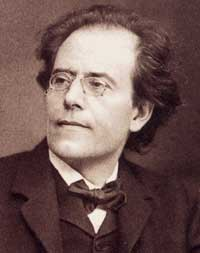
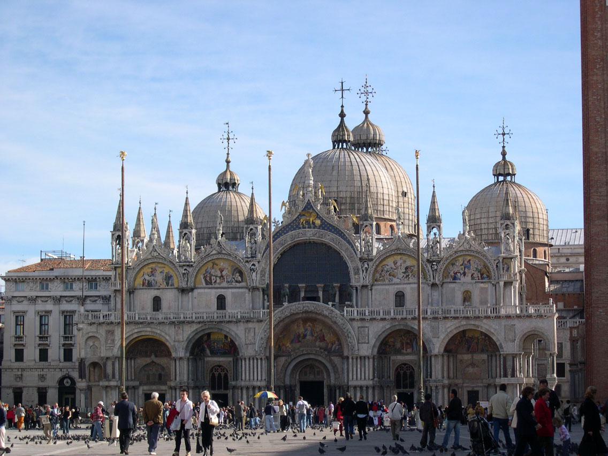
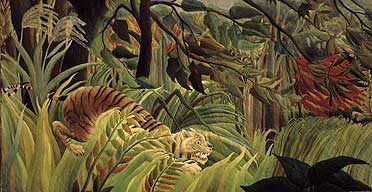

Lecture 1 for Thomas Mann, Death in Venice: Imagine me talking and pointing at the board.
Photo of the author:
Biography of Thomas Mann:
Born in 1871. His father is from the north and his mother from the south; he's a merchant, she's artistic. He comes from a family of writers and suicides.
1875 Thomas Mann is 4 and the German state is unified for the first time.
Thomas Mann is the second son of leading grain merchant and senator; on his father’s death, the company goes bankrupt and Thomas and his brother have enough money to live and try to establish themselves as writers.
1893 Moves to Munich. Inspired by Tolstoy and Flaubert and above all philosopher Nietzsche.
1900 Publishes 2 volume version of best-seller Buddenbrooks, the Decline of a Family (based on his family’s business) established Mann’s fortune and broad popular reputation.
1905 Works on a number of projects that are destined never to be finished: a novel on Munich society, “Maya”; a historical novel on Frederick the Great of Prussia; a major aesthetic essay “Intellect and Art.” He is frustrated at his inability to make progress with them. He marries Katia and they have 6 children.
1909 Publishes the novel Royal Highness…as the second novel from the author of the highly regarded Buddenbrooks it is judged to be lightweight.
1910 Feels increasingly worried about how to repeat success with an unquestionable masterpiece,
1911 political history: conflict between Germany and France over Morocco threatens to bring 40 years of peace to an end; ends when Germany backs off, but political tensions are reflected in the story.
1911 Vacation journey to the Adriatic island of Brioni in May. On May 18, receives news of the death of eminent composer Gustave Mahler, whom Mann had met the previous year, whom the hero of the novella looks like and is named after. From May 26 to June 2, stays on the Lido in Venice. Begins to write Death in Venice. Published in June 1912.
Gustave Mahler:

Mann wins Nobel Prize in 1929 specficially for Buddenbrooks not Magic Mountain, a massive novel published in 1924, an allegory full of social criticism. Mann speaks up against the Nazis, becomes US citizen in 1944. In 1952, disturbed by McCarthy hearings in Congress against communists, he moves to Switzerland where he dies in 1955.
1975: A scandal breaks out in Germany when his diaries are published and his homo/bisexuality is confirmed.
Death in Venice. Page 1819
Let’s look at the title. It's pretty clear what this story is going to be about, but from the opening we know it’s not like Ivan Ilyich: The main character is alive and not in Venice.
Who is he? Where is he? Munich most fun-loving of German cities, famous for it
1819: read paragraph 1.
Unlike Proust, the setting is very defined: but the words glowered and threateningly suggest that we can’t get too comfortable.
What do we learn right away about him? What kind of style is the story written in? In this case, the style reflects the person being described: parallel to Proust—straining at the breaking point (sensitive, introspective, feels and analyzes everything). What is his work ethic? He finds the job of writer difficult and dangerous. Usually we associate danger with more physically demanding jobs such as firefighter, construction worker.
He wants to have a profitable evening: he wants to accomplish a lot of work.
Paragraph 2: It was early May…
Where does he go for a walk? Ends up at the North Cemetary Stop: Read the next paragraph (1819-20): deserted, crosses head stones and monuments form a second untenanted graveyard, mortuary chapel.
What kind of omen is this in a novella entitled Death in Venice? Details look ahead to Venice: byzantine.
Venice is the Italian city nearest Byzantium (Roman Empire was divided in two—west is Europe and east is Turkey-Constantinople): The details of architecture make us think of St Mark’s in Venice: 
Sunset: end of day, end of life, what do the messages announce. The two apocalyptic beasts might be the lions featured in St Marks--look above the main door. House of God, eternal light: the story is going beyond every day reality. From the very beginning of the story, we have a tension between a very physical reality, such and such a street in such a town, we can look it up on a map and this sense of mystical otherworldliness. His thoughts are directed heavenward but then his thoughts are taken “in a completely different direction.” Not heavenward.
A man in the portico: next paragraph: It was not clear…
What is strange, uncanny about this new character? Everything. snub-nose, red hair, imperious surveillance, fortitude, even wildness…
Where does he come from? Symbolic of? What are the elements of travel associated with him?
clearly not of Bavarian stock; appearance of a foreigner; of a traveler from afar; rucksack, stick with an iron tip…
What about this final detail in description? His lips seemed insufficient…menacingly displayed their entire white length.
Reminds me of a skull.
Next paragraph: It is entirely possible…
There is an
unexpected confrontation—their eyes meet. How does it affect Gustav? He walks away and says: In a moment he had forgotten him. Is that true? (no) Why does the text say that? (It's what Gustav wants to think.)
But perhaps—it’s the author telling us something the character doesn’t know—dramatic irony. We see him from the outside, we can see the patterns that he doesn’t.
What is the transformation that has occurred? An epiphany: Aschenbach's imagination was set working.
Next paragraph (1821)
“It was wanderlust, nothing more” Who’s talking here? Again, Aschenbach talking to himself. But the fantasy becomes more and more powerful; it’s what the hero is trying to keep from himself: we recognize his passion and his self-delusion.
Read this passage out loud —how is it different from anything we’ve read so far? He saw, saw a landscape… Rhythm changes; imagery anything but daily matter of fact like his walk, daily routine. What did you visualize when you read this passage? Tiger (Blake) and also the paintings of Henri Rousseau.

Then the vision faded, and with a shake of his head Aschebach resumed his promenade… What does the shake of the head suggest? He’s trying to take charge again: passion and reason. control and imagination. He takes this intense hallucinatory vision and tries to make it normal, by analyzing it logically.
What’s different now at this point of his life? Sunset theme: his age. We follow his internal debate between his duty and his desire to escape. He had never even been tempted to leave Europe… His impulse/ wanderlust/ urge to escape is very different than Emma’s—he’s given nearly everything to duty, and it’s brought him fame and success. There’s something hollow about his success though—Page 1822. Was his enslaved sensitivity…taking with it all his joy…not that he was producing bad work… What is art without joy? This sounds a little like Proust’s bad art: all effort, no inspiration, nothing real. But though the nation honored it…he was fearful.
He arrives at a compromise: Travel it would be then…Not to far, though, not quite all the way to the tigers. There's that hollow ring again. Can you really make sure that you won't get to the tigers? Maybe the tigers will come to meet him?
The final paragraph in Chapter 1 lays it out: rational vs irrational—train schedules vs mysterious disappearance of stranger.
From a critic: “The opening chapter of Death in Venice does two contradictory things: it builds up the dignified world of an established writer and at the same time shows it beginning to crumble. We are drawn into taking his status seriously—perhaps even a touch solemnly—yet also invited to have doubts.”
Chapter 2 is fairly strange. The story line itself will pick up again in Chapter 3, but we have this major digression. What is the point of the chapter? It tells a story but not of external events. It recounts his career to date, his delicate condition, his character, his recent deliberate turn away from the past, his new style, a few simple facts of his personal life and finally, at the very end, strangely enough, his physical appearance. All in a formal style that matches or exceeds Chap 1. How did it strike you?
A key metaphor is used to characterize his life: 1823: When he got sick in Vienna, a canny observer remarked about him to friends, "You see, Aschenbach has always lived like this"—and the speaker closed the fingers of his left hand into a fist—"never like this"—and he let his open hand dangle comfortably from the arm of the chair. We’ll watch though the story to see if his hands relax.
Also the age 35 is exactly Mann’s age when he wrote this story. Given the fussy, formal style in the first two chapters (with the exception of the vision passage) we tend to assume he’s Aeschenbach’s age 53.
Bottom of page 1823: His watchword, however, was "Endure" and he saw in his novel about Frederick the Great…
What is the connection with Frederick the Great? (See bio). Remember him from Candide? Ironically Frederick was the definition of masculinity but also homosexual; important themes of this work. Aeschenbach takes a military man’s approach to art. What kind of work ethic is described? Endure, perseverance, suffer; cold water.
The next important thing: how has his work changed over time?
Describes his early work: then 1825: he had pandered…He’s being judgmental, rejecting his own past and making it seem suspect; the story seems to echo the family drama of 6 Characters in Search of an Author page 1826 …by driving his wife into the arms of a beardless boy… Next, he's reformed; a moralist …a decisive turn away from all moral skepticism, from all sympathy with the abyss… Can you really reject the abyss? Once you’ve looked into the tiger’s eyes, can you forget?
He has a new aesthetics. Was it an intellectual consequence of this "rebirth," of this new dignity and rigor…sense of beauty…deliberately classical and masterful quality. These references to classicism explain why we’ll be studying mythology for next time.
But we also have to be skeptical—
A kind of official, educative element began in time to appear in Aeschenbach's productions. His style in later years dispensed with the sheer audacity… Art vs knowledge; surface beauty vs depth. formulaic?!!! Is this a good choice? Is it not sweeping anything disturbing under the rug? Excluding every unrefined word from his vocabulary like Louis XIV may exclude a lot of the world along with it. What kind of accomplishment is it to appear in text books? What did he giving up in exchange for fame? What’s the significance of getting his von title? Becoming an aristocrat—so many of our other characters aspired to that.
Finally in the last two paragraphs we get a personal details! Why so late? His imbalanced life is reflected also in the idea of his head being too big for his body. What kind of family life? Why so little space devoted to it?
For me, these last minute biographical details reinforces the sense that this chapter is a sort of mock biography, the kind of obituary they write of famous people, just waiting to fill in the date of death.
{kind=link}